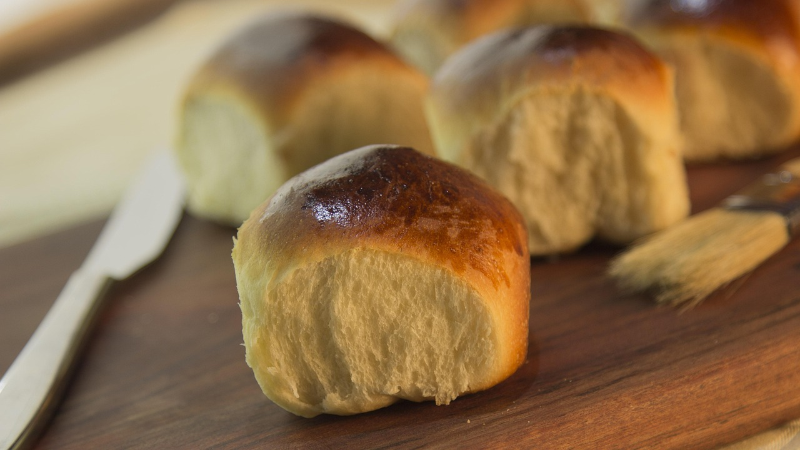

Dinner Rolls

Recipe for Dinner Rolls
Are you responsible for bringing the dinner rolls to your next family gathering? Look no further than our recipe for soft, buttery, fluffy dinner rolls
Ingredients:
- 1 Cup of Warm Milk (Temperature of Milk should range somewhere between 105-110 F to fully bloom yeast)
- 1 Tbsp of Granulated Sugar
- 2 ½ tsp of Active Dry Yeast
- 3 ½ cups of All Purpose Bread Flour
- 1 ½ tsp of fine Sea Salt
- 1 Large Egg
- 2 Large Egg Yolks
- 2 ½ Tbsp of Softened Unsalted Butter
Steps:
- First take you warm milk and mix it together with your sugar in a large mixing bowl
- Next you'll want to take your Yeast mix it in gently with your Milk & Sugar mixture
(In your bowl with the Milk, Sugar and Yeast mixture you'll want to give the mix time to sit. Once the yeast begins to show slight bubble at the milks surface you'll know the yeast has properly bloomed.)
- While waiting for the Yeast to bloom, mix your Flour and Salt together in a separate bowl and set aside.
- Once the yeast is bloomed, begin gradually adding your Flour and Salt mix to your Milk mixture. Lets add the flour in 1 cup at a time.
- After your first two cups of flour have been added to your Milk mixture, add in your unsalted butter and whole large egg. Mix those in thouroughly
- Next add your last cup and half of flour along with your two egg yolks. Continue to mix until all of your ingrediants are incorporated.
- Remove your dough from your mixing bowl and begin to hand kneed for 8-10 minutes. Lightly flour your hands if the dough is too sticky.
- Once the dough is kneeded, set it into a clean, oiled mixing bowl and cover with wrap. Allow the dough to sit at room temperatue until the dough has risen to twice its original size.
- After the dough has risen, punch it down and release the dough out onto a lightly floured counter top. Again, feel free to lightly flour your hands.
- Kneed and stretch the dough out a bit, but not too aggresively. Then using a knife, or divider begin to separate out the dough into balls roughly 45 grams a piece. Roll the balls out smooth and add them to a baking dish lined with partchment paper.
- Once all of your balls are separated and on the partchment paper, set the tray in your over (with your oven off!) alongside a dish or pot with hot, boiling water. The steam from the hot water will help the dough balls rise. Allow them to rise for about 30 minutes, or until doubled in size.
- Remove the baking dish from the oven along with the water dish. Then set your over to 450 degrees F. Once the oven is preheated add your dough to the oven. Allow them to bake for about 10 minutes, then repeatedly check on your dinner rolls every 2-3 minutes until they've browned up and have the color you're looking for.
(Optionally, you can add an egg wash to the top of the rolls before putting them in the oven to give a nice, deep brown color to the rolls.)
For additional recipes, head back to our Home page to see what else we've got!